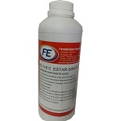
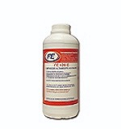
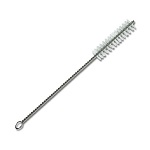
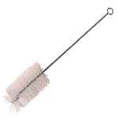
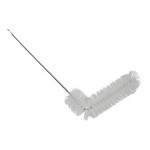
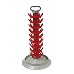
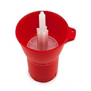
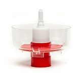

Ácido peracético
Se utiliza para la sanitización de equipos, botellas y accesorios. No apto para euipos de aluminio o cobre. Presentación: Envase x 1kg y 5kg.
Star San
Excelente desinfectante de utilización muy común en la cervecería. Esta aprobado para el uso en la desinfección de materiales utilizados en la industria alimentaria. Presentación: Envase x 1kg y 5kg.
Detergente alcalino en polvo
Se utiliza para la limpieza de equipos, botellas y accesorios. No apto para equipos de aluminio. Presentación: Envase x 1kg y 5kg.
Detergente neutro en polvo
Se utiliza para la limpieza de equipos, botellas y accesorios. Apto para equipos de aluminio. Presentación: Envase x 1kg y 5kg.
Cepillo recto
Se utiliza para la limpieza de trampas de aire.
Cepillo recto para botellas
Construido en nylon reforzado
Cepillo curvo
Se utiliza para la limpieza de fermentadores. Construido en nylon.
Rack escurridor de bottellas
Capacidad para 45 y 81 botellas.
Sanitizador spin
Permite sanitizar las botellas mediante un chorro a presión que moja toda la pared interna asegurando una excelente desinfección. Apto para los sanitizantes habituales como alcohol, ácidos orgánicos o compuestos halogenados.
Sanitizador a presión
Permite sanitizar las botellas mediante un chorro a presión que moja toda la pared interna asegurando una excelente desinfección. Apto para los sanitizantes habituales como alcohol, ácidos orgánicos o compuestos halogenados.